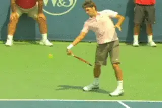
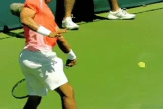
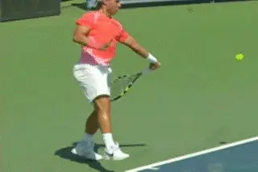
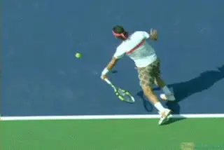

The String Bed and the Pro Contact Point¶
John Yandell¶
The goal when swinging the racket in tennis is to make contact in the center of the string bed, the so-called "sweet spot," correct?
We all know the sound and the feeling of the connection between the ball and the strings when it seems perfect. The aesthetics and the harmonics of that moment are one reason why people love tennis.

How many balls do the top players actually hit dead center?
But where exactly do the top pros make contact on the string bed? If the center is really the sweet spot, how often do they find it? Are there other areas on the racket they actually prefer?
There is a claim currently circulating in coaching that the top players actually prefer to make contact on the lower half of the string bed, down closer to the court, and this allows them somehow to create more control.
Could that possibly be true? It seems unlikely, but it got me wondering about where exactly the contact actually occurred most of the time.
So I decided to find out where top players actually strike the ball, by looking at the forehands of the top three players in the world in our new high def high speed video: Novak Djokovic, Rafael Nadal and Roger Federer. Shot at up to 500 frames a second, it shows the ball on the strings in every event, allowing us to judge the actual contact point with the string bed.

Could it be possible that pro players consciously make contact below the center line of the string bed?
[What I found out was in one way predictable, but in others quite surprising. No, pro players don't hit most balls on the lower half of the strings. That claim is unfounded.]
But they don't hit most balls in the center of the racket either. A very small percentage of their forehands are actually in the middle of the so-called sweet spot.
Instead they appear to have a clear preference - at least on the forehand - for making contact out closer to the tip.
The Details
So let's go over in more detail what this surprising study actually showed. In the course of examining these questions, I looked at almost 300 forehands, spread about equally for each player. In our new High Speed Archive (link), I chose balls hit from the Center, Wide, Inside Out, and Inside In positions. I was looking for balls where the player seemed in control of the ball and on relative balance, combined with a clear view of the ball/string bed collision.
First I investigated the claim about pros hitting lower on the string bed. I drew a line running from the vibration dampener near the throat out to the top of the frame. Then I looked to see whether the ball hit directly on this center line, or whether it hit above it(closer to the sky) or below it (closer to the court).

One third of all hits were above the center line - about the same as the hits that were center and below.
The answer? Looking at the totals for these three players, most balls were hit square on the center line, but only by a slight margin. By on the centerline I mean with half the ball above the line and half the ball below.
It turned out this was where the top three players made contact on a little more than a third of all balls. The remaining hits were divided virtually evenly above and below. A little less than a third hit with most of the ball below the center line. And a little less than a third were hit above.
There were a small number of balls both above and below that were hit out close to the edge of the frame, but mostly the difference was the matter of an inch or a half inch or less in either direction.
My own conclusion based on this was that the players were trying for the center line, and often missed a little up or a little down. But they certainly weren't trying to hit below center--or above, for that matter.

Only a few balls were hit close to the edges of the frame.
So that was the big picture on question one. Interestingly, however, there were some differences between Novak, Rafa, and Roger when we break it down for the individual players.
Djokovic actually hit a much higher percentage of balls on the center line than either Federer or Nadal. Over half his forehands found that center line. Of the remaining half, about a quarter were hit below and about a quarter were hit above.
Federer found the center line only about 30% of the time. He actually hit a slightly higher percentage of his forehands above the line - about 37%. The rest, or about 33%, were hit below.
Rafa found the center line even less than Roger. About 28% of his forehands were dead on the center line, the rest were divided virtually evenly above and below - about 36% each.
The following chart tells the tale:
Player Center Above Below Total
Line Center Center
Djokovic 52 23 27 102
Federer 26 32 28 86
Nadal 25 33 32 90
Center of the Sweet Spot?
So my original hypothesis seemed confirmed, but as I plotted out the actual contact points, another pattern that I hadn't considered started to become obvious.
Most balls were hit a half inch to an inch off the center line in one direction or another.
Despite all the talk about the sweet spot, these three players actually hit shockingly few balls in the dead center of the frame. Less than 15% of the total hits were in what appeared to be the center of the sweet spot.
Roger Federer hit 17 forehands dead center out of 85. Rafael Nadal hit 12 dead center out of 90. Novak Djokovic hit exactly 5 balls that appeared to be dead center out of 105.
So the total for the top three players in the world was this: looking at 270 forehands only 34 were hit dead center. That's 13%!
When we looked at the top and the bottom, the ball contact points were roughly equally divided. But when we looked at the other measure, whether the ball hit closer to the throat or the tip of the frame, the results showed something quite different.
Throat or Tip?
To study this I drew another line dividing the racket in half, running straight down from the top edge to the bottom edge. So now, depending on where the ball hit in relation to this line, I could see if it was closer to the throat or the tip.
Two thirds of the contact points were closer to the tip.
When I looked at the same forehands from this perspective, he answer was pretty startling. About 65% were hit closer to the tip. That was 178 out of 278 forehands. As with the top and bottom measure, many balls hit touching the dividing line at least in part. But the fact was two thirds hit with most or all of the ball landing closer to the tip of the racket than the throat.
And this is somewhat deceiving, because the percentage clearly closer to the throat was actually minmal. Only 17 balls, about 5%, hit with part or all of the ball closer to the throat. The rest, 30% or 83 balls, hit square on this dividing line, either dead center, or a little above or a little below.
Again, the table tells the tale:
Player Closer Closer to Center Total
to Tip Throat Line
Djokovic 85 3 14 102
Federer 43 3 40 86
Nadal 50 11 29 90
[Only a small percentage of balls hit the string bed closer to the throat.]
As the chart shows, as with the top to bottom measure, there were again some significant differences in the players. The majority of balls for all three were closer to the tip. For Djokovic, though the number was much higher. Almost 85% were closer to the tip. The number for Federer and Nadal it was just over 50%.
So interesting that Djokovic hit more balls on the center line that either Federer or Nadal, and also hit more balls out closer to the tip. In fact, Djokovic seemed to love to hit the ball right on the center line and just below the arc of that head logo center. Is it possible he is more in control of his contact points than his two rivals?
That may or may not be. But the larger question is why all three hit so many balls out there toward the tip? When it comes to the horizontal line from the dampner to the tip, it appears the players were going for this centerline and making some and missing some a little both ways.
[Novak seemed to love to make contact right below the arc of that Head stencil.]
But on this second measure, with the vertical center line from top to bottom, they were far more successful in controlling the contact point and chose more or less specifically to hit nearer the end of the racket and above the so-called sweet spot.
There must be some reason for that and I'm hoping some of our subscribers can get a discussion going in the Forum about it. To get the ball rolling I talked to our contributing writer Geoff Williams, who, if you follow his equipment posts, could only be described as an elite, world-class gearhead. His thoughts were very interesting.
"I notice that my string wear is more towards the top of the hoop, in between the 4th-6th cross down from the top of the hoop. That's where I break my strings, and those strings show the most notching, and wear, as they are more worn down and less shiny when you take a close look at them," Geoff said.
["When your contact point is more out towards the end of the frame there is more leverage and more torque, and the velocity available is higher than if you hit more towards the middle."]
Geoff went on to say: ["There is more acceleration with a longer lever arm, and more mass applied, if the stick speed is the same. However, there is a point at which the human body cannot gain more speed. There is a reason the Romans conquered most of the world with infantry that used a 27" combat sword!"]
In addition to the similarity in the length of the tennis racket and the Roman sword, Geoff went on to make another very interesting observation, this one about Federer's strings. "If you look at Federer's string-a-ling location, he places ten of them in between the 4th and 6th cross down from the top of the hoop." Like maybe he was expecting to hit more balls closer to the top of the frame?
Maybe Roger was way ahead of this on this one and didn't need our study to figure out where he hit the ball. Let us know if you think this might be right or what you think in general in the Forum!

John Yandell is widely acknowledged as one of the leading videographers and students of the modern game of professional tennis. His high speed filming for Advanced Tennis and TPA have provided new visual resources that have changed the way the game is studied and understood by both players and coaches. He has done personal video analysis for hundreds of high level competitive players, including Justine Henin-Hardenne, Taylor Dent and John McEnroe, among others.
In addition to his role as Editor of TPA he is the author of the critically acclaimed book Visual Tennis. The John Yandell Tennis School is located in San Francisco, California.